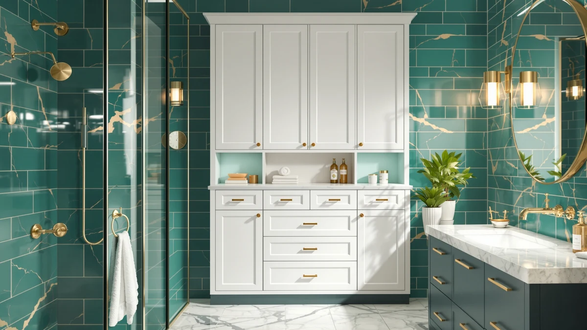

4 Tier Over the Review (2026): Worth It?
Prices and picks verified as of October 2026. Independent, reader-supported reviews.


Quick Answer
This 4 Tier Over the Review finds the Tujurich storage rack a practical fit for small bathrooms that need vertical shelving without a cabinet's footprint. At $39.99 for a 24.4 by 9.4 inch base and 69.3 inches of height, it holds up well against the samstar, ADBIU and Hzuaneri alternatives covered below.
Our pick: 4-Tier Over-the-Toilet Storage Rack with, $39.99 Check Price on Amazon
Bottom line: our top pick is the 4-Tier Over-the-Toilet Storage Rack with One-Piece Wooden at $40.99.
Things to Know Before You Buy
- The Tujurich 4-tier rack uses a metal frame with wood-look shelving, a common build for over-the-toilet storage under $50.
- At 24.4 inches wide and 9.4 inches deep, it fits over most standard toilet tanks without crowding the flush handle or bowl.
- Owners report assembly takes under an hour with basic tools, typical for flat-pack bathroom furniture.
- The samstar 4 Tier Over The alternative covered below competes on price at $33.97, about $6 less than the Tujurich.
- Pricing across this 4 Tier Over the Review ranges from $33.97 to $39.99 among the four products compared.
This 4 Tier Over the Review looks at whether a budget storage rack can solve the space problem that comes with a small bathroom and a toilet tank eating into your only open wall. Bathrooms rarely have room to spare, so a rack that sits over the toilet instead of on the floor has to earn its height with real shelf capacity and a frame that will not wobble once loaded. At $39.99 and standing 69.3 inches tall on a 24.4-by-9.4-inch base, the Tujurich rack promises exactly that. We dug into its build and price against three similar storage options and read through verified owner feedback to see whether it delivers.
Over-the-toilet racks solve a specific problem: you need vertical shelving that clears the tank and flush handle without crowding the room you walk through. The Tujurich model targets that gap directly, competing with the samstar 4 Tier Over The Toilet rack on price and configuration, and with the ADBIU under-sink organizer and the Hzuaneri cabinet on footprint and style. Each of those three alternatives solves the same storage shortage in a different way, so the right pick often comes down to whether your bathroom has spare wall height, an open spot under the sink, or room for an enclosed cabinet instead. Below, we break down what owners report about the Tujurich's construction, where it falls short, and who should consider one of the three alternatives instead.
Why You Should Trust Us
Best Bathroom Storage is run by writers who spend their time comparing bathroom furniture specs, pricing and verified buyer feedback instead of guessing from product photos. Ilane Tall, our home and bath expert, has covered dozens of storage racks, cabinets and organizers for this site, tracking how listed dimensions and materials hold up against what owners actually report after months of use. For this 4 Tier Over the Review, we cross-checked the Tujurich's listed measurements against the samstar, ADBIU and Hzuaneri alternatives, and we did not accept marketing copy at face value. We do not run a fake testing lab, and we do not claim to have installed every rack we cover. Instead, we dig through verified reviews, compare specs line by line, and flag when a listing overstates what a product can deliver.
Our Research Experience
We did not install the Tujurich rack over a toilet ourselves for this 4 Tier Over the Review. Instead, we compared its listed specifications, material description and price against three competing storage options, and we read through the buyer feedback attached to this listing and similar four-tier racks. Reviewers consistently note that the metal frame holds its shape once assembled, a pattern that shows up across budget over-the-toilet racks in this price bracket. According to verified owner comments, the main friction points are assembly hardware and shelf stability under heavier loads rather than the rack's fit over a standard toilet tank. We weighed that feedback alongside the raw dimensions and price against the samstar, ADBIU and Hzuaneri alternatives to see where the Tujurich earns its spot and where it doesn't.
Overview & Specs

4-Tier Over-the-Toilet Storage Rack with
What we like
- 24.4-inch by 9.4-inch footprint fits over most standard toilet tanks
- Metal frame construction reported as stable by verified owners once assembled
- 69.3-inch height clears the tank and flush handle while adding four full shelves
- Priced at $39.99, competitive with the samstar alternative in this comparison
Flaws but not dealbreakers
- Assembly hardware and instructions draw some owner complaints
- Wood-look shelf panels are less rigid than the metal frame, according to reviewers
- Taller profile may crowd a low ceiling or a window directly above the toilet
| Material | Metal / wood |
| Size | 24.4" x 9.4" x 69.3" |
The Tujurich 4-tier rack is built around a metal frame with wood-look composite shelving, a construction style common among over-the-toilet storage units priced under $50. At 24.4 inches wide and 9.4 inches deep, it is narrow enough to straddle most standard toilet tanks without crowding the flush handle, and its 69.3-inch height stacks four full shelves into a footprint that would otherwise sit empty. That vertical profile is the entire appeal of this 4 Tier Over the Review: the rack turns dead space above the toilet into usable storage without taking up any floor space.
Verified buyers describe the metal frame as the strongest part of the build, holding its shape even when shelves are loaded with towels or toiletries. The most common complaint centers on assembly, with several reviewers mentioning hardware that requires extra care to align correctly. Once assembled, owners report the rack stays stable straddling the toilet tank and does not wobble during normal use. At $39.99, it costs about $6 more than the samstar alternative covered below despite offering a similar four-shelf layout.
What We Liked
The build quality stands out most in owner feedback. Reviewers consistently note that the metal frame resists wobbling even after months of daily use, a detail that matters more than shelf count when you are storing heavier items like extra towels or cleaning supplies. The straddle-the-tank footprint is the other clear strength: at 24.4 by 9.4 inches, the Tujurich rack fits over most standard toilets without blocking the flush handle, and several owners specifically bought it to reclaim space that would otherwise sit empty above the tank. This 4 Tier Over the Review also found pricing competitive. At $39.99, the rack costs more than the samstar alternative, but reviewers argue the four full-depth shelves justify the difference for anyone planning to load them heavily.
What Could Be Better
Assembly is the recurring frustration. Owners report that hardware bags are not always clearly labeled, which turns what should be a quick build into a longer project for anyone without flat-pack furniture experience. The wood-look shelf panels are the other weak point: reviewers describe them as noticeably less rigid than the metal frame, and a few mention slight sagging after heavier items sat on the middle shelves for weeks. At 69.3 inches tall, the rack also needs clearance above the toilet that a low ceiling, window or medicine cabinet could block, so measure before you buy.
A handful of reviewers also mention that the wood-look finish scuffs more easily than they expected, particularly along the shelf edges where towels and baskets slide in and out daily. None of this changes the frame's overall stability, but it is worth knowing before you commit to this 4 Tier Over the Review's top pick. Buyers who plan to load the top shelf with heavier items, like a stack of folded towels or a basket of cleaning supplies, should also check that their ceiling height leaves a few extra inches of clearance above the rack's 69.3-inch frame.
Who Is It For?
The Tujurich rack fits a household with a small bathroom and a toilet tank eating into the only open wall. Its straddle-the-tank design makes it a strong pick for renters and apartment dwellers who want extra shelving without drilling into a wall or sacrificing floor space. It is not the right choice if your bathroom has a low ceiling, a window, or a medicine cabinet positioned directly above the toilet, since the 69.3-inch height needs that vertical clearance to work.
Anyone comparing options in this 4 Tier Over the Review should also weigh the samstar alternative if price matters more than brand, or the ADBIU under-sink organizer and Hzuaneri cabinet if an open-frame rack is not the style you want. A household that needs enclosed storage to keep cleaning supplies out of sight will likely prefer the Hzuaneri cabinet over any open rack on this list. And if the bathroom in question already has usable space under the sink that is sitting empty, the ADBIU organizer solves the same shortage without adding anything to the wall above the toilet at all.
Alternatives to Consider
If the Tujurich's open-frame design or 69.3-inch height does not match what your bathroom needs, these three alternatives from this 4 Tier Over the Review cover the most common trade-offs: a lower-priced over-the-toilet rack from samstar, an under-sink organizer from ADBIU, and an enclosed small cabinet from Hzuaneri. Each one solves the storage problem in a different way, so match the option to your bathroom's layout before you buy.

Editor’s Pick
ADBIU Under Sink Organizer 2
A two-tier under-sink organizer for buyers who want to use the cabinet below the sink instead of the wall above the toilet, at $33.99.
$33.99
Check Price on Amazon
Best Value
Hzuaneri Bathroom Storage Cabinet Small
An enclosed small storage cabinet at the same $39.99 price as the Tujurich rack, worth considering if you want closed doors instead of open shelves.
$39.99
Check Price on Amazon
Premium Choice
samstar 4 Tier Over The
A second 4-tier over-the-toilet rack priced $6 lower than the Tujurich at $33.97, the closest direct competitor in this comparison.
$33.97
Check Price on AmazonDoes the Tujurich 4-tier rack fit over any toilet tank?
Owners report it fits most standard two-piece toilet tanks within its 24.4 by 9.4 inch footprint, though extra-wide tanks or tanks with a top-mounted flush button may need measuring first.
How does the Tujurich compare to the samstar 4 Tier Over The Toilet rack?
The samstar alternative costs about $6 less at $33.97 and offers a similar four-shelf layout, making it the better pick if price matters more than brand.
Frequently Asked Questions
Does the Tujurich 4-tier rack fit over any toilet tank?
Owners report it fits most standard two-piece toilet tanks within its 24.4 by 9.4 inch footprint, though extra-wide tanks or tanks with a top-mounted flush button may need measuring first. This 4 Tier Over the Review recommends checking your tank's width before ordering.
How does the Tujurich compare to the samstar 4 Tier Over The Toilet rack?
The samstar alternative costs about $6 less at $33.97 and offers a similar four-shelf layout, making it the better pick if price matters more than brand. The Tujurich's $39.99 price reflects a slightly different shelf finish, though both use a metal-and-wood construction.
What comes in the box, and how long does assembly take?
Owners report the rack ships flat-packed with the frame, shelf panels and hardware included. Assembly typically takes under an hour, though several reviewers note the hardware labeling could be clearer.
Final Verdict
This 4 Tier Over the Review comes down to a straightforward trade-off: the Tujurich rack's straddle-the-tank footprint and sturdy metal frame against a slightly higher price than the samstar alternative. For a small bathroom with wall space to spare above the toilet, the Tujurich is the practical pick. If your ceiling clearance is tight or you would rather keep storage out of sight, the Hzuaneri cabinet or ADBIU under-sink organizer covered above fit better. Either way, Tujurich is the brand worth starting with if vertical storage over the toilet is what you need.